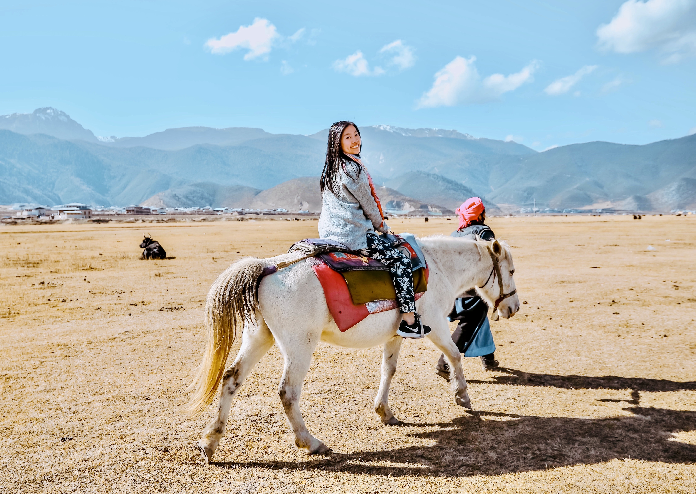

<script type="text/javascript" src="./assets/js/controllers/AboutController.js"></script>
<article class="about_page">
  <div class="about_img_container">
    
    <div class="clear"></div>
  </div>
  <div class="about_text_container">
  	<h2>Bonjour encore, 👋 </h2>
  	<p>A little about me:</p>
  	<ul>
  		<li>You can call me 美洁 (Mei Jie) or Maggie.</li>
  		<li>I’ve lived in 4 countries 🇨🇳 🇨🇦 🇫🇷 🇺🇸 , currently in Toronto, ON.</li>
  		<li>I speak 3 languages (Mandarin, English, French).</li>
      <li>I'm a self-taught photogtapher.</li>
      <li>I'm a product designer at <a target="blank" class="blue_link" href="https://kineticcommerce.com/">Kinetic Commerce</a>.</li>
  	</ul>
    <p>I’m a UX/UI designer who believes in creating visually appealing and intuitive products.</p>
    <p>Experiencing life in different places has shaped me into a problem solver, an empathetic and adaptive designer. I love to learn from different people and the insights I gain from them serve as the main drive behind my design.</p>
    <p>Before my journey into UX, I experienced different fields including Photography, Marketing and Supply Chain Management. My diverse experiences have sharpened my skills in research, analysis and aesthetics. When I finally learned about UX, I fell in love with it. I'm excited by the process of uncovering users' hidden needs from research, creatively and visually solving users' problems, and thinking critically to make sure solutions scale. </p>
    <p>When I design, I try my best to balance well business and user goals, I make sure that there's a reason behind every design decision I make. When I’m not designing, I enjoy <a target="blank" class="blue_link" href="https://www.instagram.com/maggie_li92/">✈️  travelling</a>, taking photos with my 📷  Nikon D750, going to 💪  gym and <a target="blank" class="blue_link" href="https://www.instagram.com/foodie_maggie_9/">eating 🌶  spicy food</a>.</p>
    <p>A lover of lifelong learning and trying new things, I am always on the lookout for opportunities. If you are interested, let me know.</p>
  </div>
</article>
